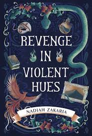
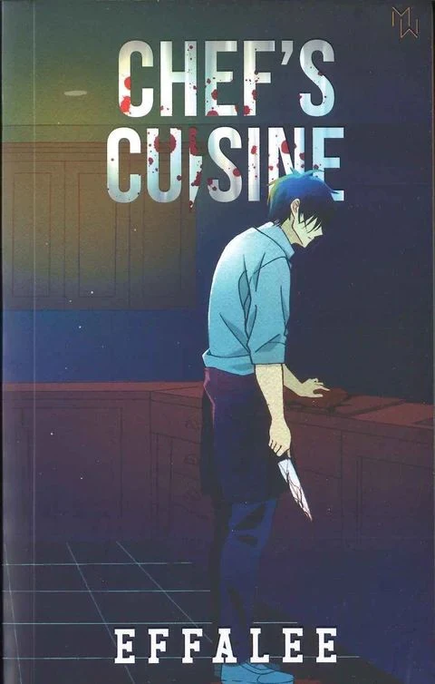
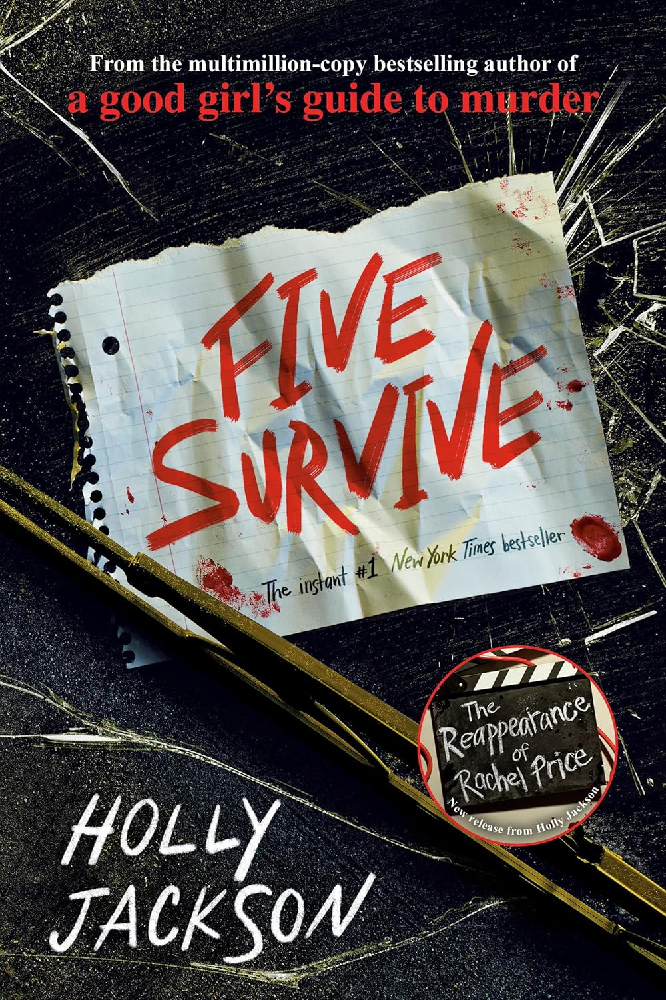
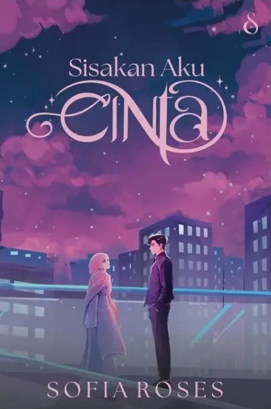
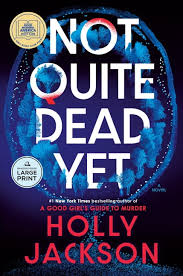
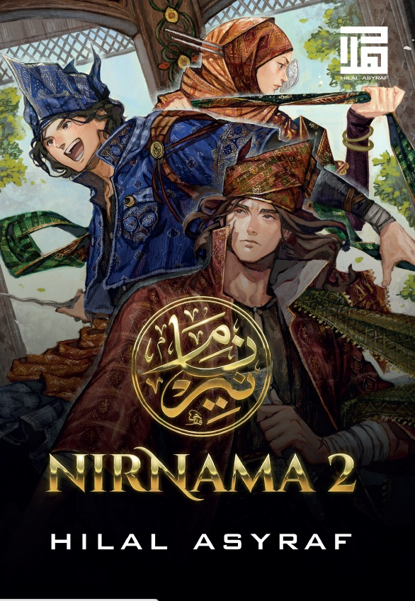
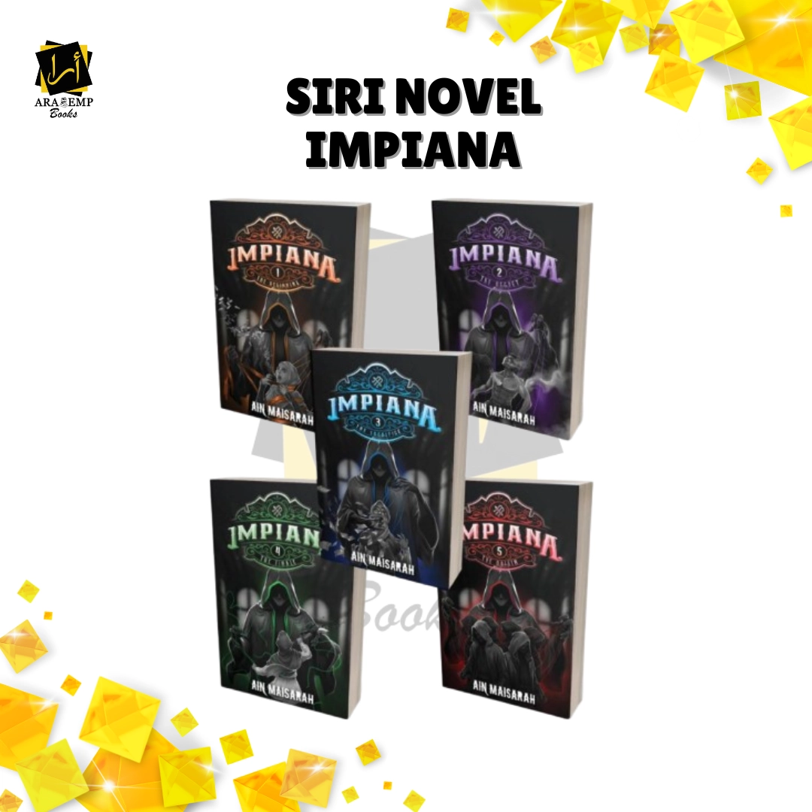
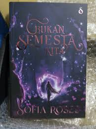
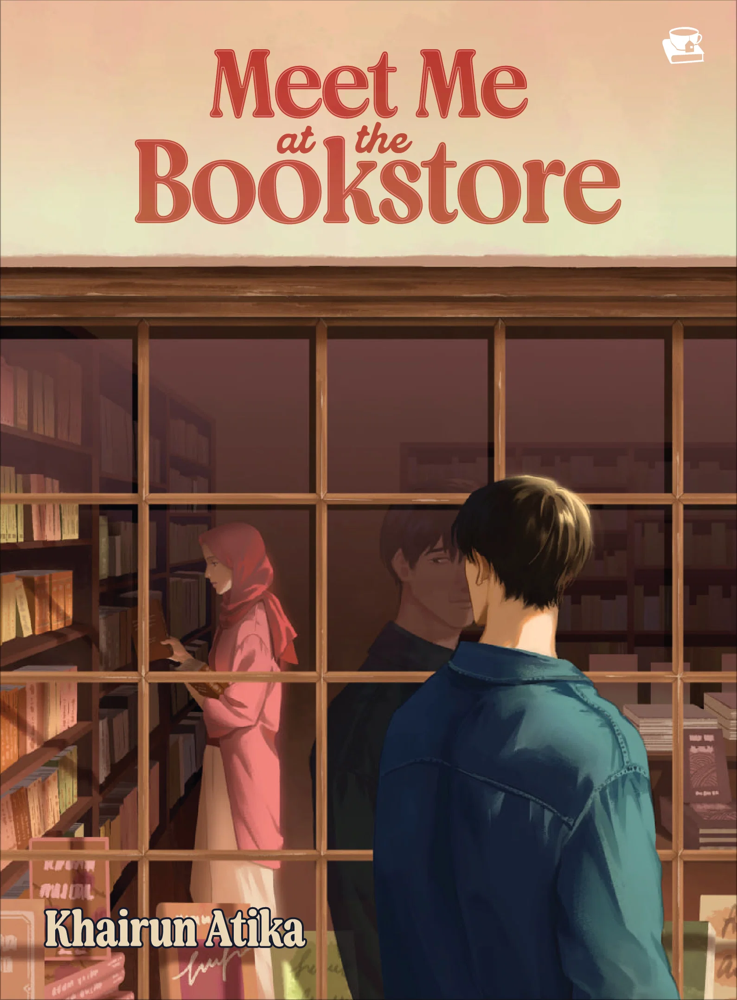

Home
Home
 About Me
About Me
 Friends
Friends
 Hobbies
Hobbies
 Book Reviews
Book Reviews
 Gallery
Gallery
 Special Page
Special Page
"Maybe its not about the happy ending..Maybe its about the story"
-Albert Camus-
|
 |
Revenge in Violent Hues
By Nadiah Zakaria | Rating: ⭐⭐⭐ (3/5)
Favourite book but the rating is a 3? How come? Well, what brought it to a 3 is because of how the end of the book is a type of open ending book which I rarely find and kinda hate because what do you mean I read the whole book and its not even telling me the final outcome. Other than the ending, the whole plot was actually so thrilling and kept me on the edge of my seat.. It started with the girl loosing her dad and her mom turned abusive to her and her little brother. The plot twist in this book are out of this world id I do say so myself so sure give this a read (cause I wont reread it again) |
|
 |
Chef's Cuisine
By Effalee | Rating: ⭐⭐⭐ ⭐(4/5)
Definitely a good first impression from the author as she got me hooked with the way she wrote this book. This book actually ended up being so sweet, then tragedy, then questioning everything that has happened then plot was explained, then ended up with a major plot twist. The girl who just happen to meet the main male character and ends up marrying him was actually sweet (minus her mother not believing her and said some very mean things). The writer played with my feelings succesfully but thankfully this book ended well and I was contempt and could sleep well after finishing the book. Now a fan of this writer and is currently reading twins territory written by the same author, and on my to be read is Qaid and Haqq by her too. |
|
 |
Five Survive
By Holly Jackson | Rating: ⭐⭐⭐ ⭐ ⭐(5/5)
I will always remember how this book left me in a daze of mysteries. This is also one of my favourite english authors especially in mysteries and thriller books. I happen to randomly came across. Started with another book of hers titled "a good girls guide to murder". This book is a standalone as it follows the main character, Red along with her group of friends that went on a field trip in an RV. Then suddenly was ambushed and had a killer with a sniper waiting for them. The killer said he was hired by someone in their friend group and that was the mystery they needed to find out. Even I as a reader was kept on the edge of my seat and that I needed to take out a piece of paper to draw who's the most possible person to be the traitor (which ended up in a wrong guess. Definitely my top 1 book above others. |

Sisakan Aku Cinta By Sofia Roses

Not Quite Dead Yet By Holly Jackson

Nirnama 2 By Hilal Asyraf

Whole Impiana series bt Ain Maisarah

Bukan Semesta Kita by Sofia Roses

Meet Me At The Bookstore By Khairun Atika
© 2026 Qie's Little Universe. All Rights Reserved.
Disclaimer: This website is created for the purpose of IML254 individual project assignment. All materials used belong to their respective owners.
Recommended Browser: Google Chrome | Resolution: 1920x1080 | Last Updated: June 2026